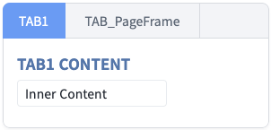
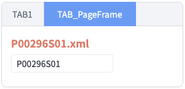

탭의 콘텐츠에 구성된 컴포넌트의 메소드를 호출하는 예제입니다. 탭의 콘텐츠가 PageFrame으로 구성된 경우에는 TabControl의 'getWindow' 메소드를 통해 콘텐츠의 객체(컴포넌트 또는 $p 등)에 접근할 수 있습니다.
탭의 콘텐츠가 직접 구성된 Input의 값 반환받기
탭의 콘텐츠가 PageFrame으로 구성된 Input의 값 반환받기
STEP 1: 초기 상태를 확인합니다.
TabControl에 2개의 탭이 구성되어 있고 첫 번째 탭이 선택되어 있습니다. 각 탭의 콘텐츠 구성 방법은 다음과 같습니다.
탭 'TAB1' : 화면에서 직접 구성.
탭 'TAB_PageFrame' : PageFrame으로 파일 'P00296S01.xml'를 지정.
Image 1.브라우저(Chrome) 실행 예시

STEP 2: 탭의 콘텐츠가 직접 구성된 Input의 값을 확인합니다.
"탭 'TAB1'의 콘텐츠에 구성된 Input의 값 반환받기" 버튼을 클릭합니다.STEP 3: 실행된 결과를 확인합니다.
탭 'TAB1'의 콘텐츠에 구성된 Input의 값이 브라우저 alert으로 출력됩니다. 출력 값 : '탭 'TAB1'의 Input 값: Inner Content'
STEP 1: 초기 상태를 확인합니다.
TabControl에 2개의 탭이 구성되어 있고, 각 탭의 콘텐츠 구성 방법은 다음과 같습니다.
탭 'TAB1' : 화면에서 직접 구성.
탭 'TAB_PageFrame' : PageFrame으로 파일 'P00296S01.xml'를 지정.
STEP 2: 탭의 콘텐츠가 'PageFrame'으로 구성된 탭을 선택(클릭)합니다.
TabControl의 탭 'TAB_PageFrame'를 선택(클릭)합니다.
Image 2.브라우저(Chrome) 실행 예시

STEP 3: 탭의 콘텐츠가 'PageFrame'으로 구성된 Input의 값을 확인합니다.
"탭 'TAB_PageFrame'의 콘텐츠에 구성된 Input의 값 반환받기" 버튼을 클릭합니다.STEP 4: 실행된 결과를 확인합니다.
탭 'TAB_PageFrame'의 콘텐츠에 구성된 Input의 값이 브라우저 alert으로 출력됩니다. 출력 값 : 탭 'TAB_PageFrame'의 Input 값: P00296S01
TabControl의 탭의 속성 'alwaysDraw'의 값이 'false'로 지정된 경우, 콘텐츠의 로딩 여부를 확인하고 로직을 구성해야합니다. 탭의 콘텐츠가 그려지고 초기 로직을 수행해야 하는 경우에는, 콘텐츠 화면의 메소드 'scwin.onpageload'에 구성하거나 TabControl의 이벤트 'ondrawcomplete'를 사용합니다.
Example 1.Script
//예제 파일에서는 스크립트 'scwin.btn_exam1_1_onclick', 'scwin.btn_exam1_2_onclick' 에 작성되어 있습니다. // TabControl 'tac_exam1'의 탭 ID가 'tabs1'인 탭의 Index를 반환받습니다. var numTabIndex = tac_exam1.getTabIndex("tabs1"); // 반환받은 탭의 Index로 탭의 콘텐츠가 화면에 로딩 여부를 반환받습니다. var isLoaded = tac_exam1.isLoaded(numTabIndex); // 탭의 콘텐츠가 로딩되지 않은 경우 로직. if (!isLoaded) { // 로직 구성 return; }
TabControl의 탭 콘텐츠가 로딩이 완료된 상태에서 컴포넌트의 ID로 접근합니다.
Example 2.Script
//예제 파일에서는 스크립트 scwin.btn_exam1_1_onclick에 작성되어 있습니다. // Input 'ibx_tabs1_tabID'의 값을 반환받습니다. var result = ibx_tabs1_tabID.getValue();
TabControl의 탭 콘텐츠의 로딩이 완료된 상태에서 TabControl의 'getWindow' 메소드로 콘텐츠의 윈도우 객체를 반환받습니다. 반환 받은 콘텐츠 윈도우 객체의 '$p.getComponentById'를 사용하여 컴포넌트 객체를 반환받습니다. 다음의 스크립트 예시에 세부 로직이 작성되어 있습니다.
Example 3.Script
//예제 파일에서는 스크립트 scwin.btn_exam1_2_onclick에 작성되어 있습니다. // TabControl 'tac_exam1'의 탭 ID가 'tab_exam_pageFrame'인 탭의 콘텐츠 윈도우 객체를 반환받습니다. var winTabContent = tac_exam1.getWindow("tab_exam_pageFrame"); // Input 'ibx_exam' 객체를 반환받습니다. var cmpInput = winTabContent.$p.getComponentById("ibx_exam"); // Input 'ibx_exam'의 값을 반환받습니다. var result = cmpInput.getValue();
getWindow( idx )
isLoaded( idx )
getTabIndex( tabID )
$p.getComponentById( componentID )